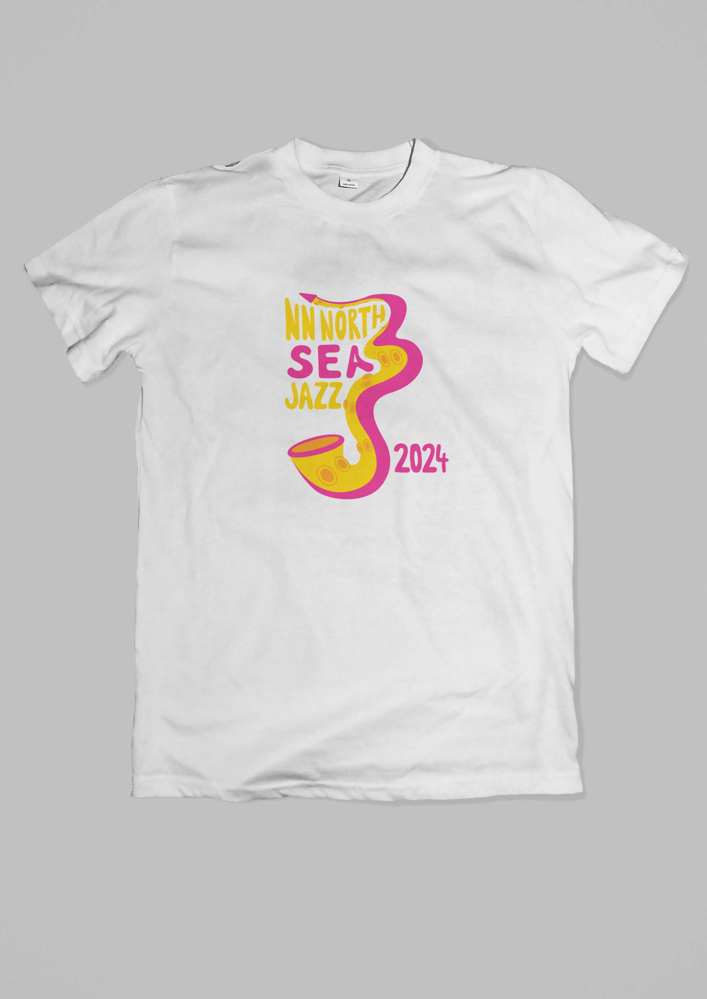
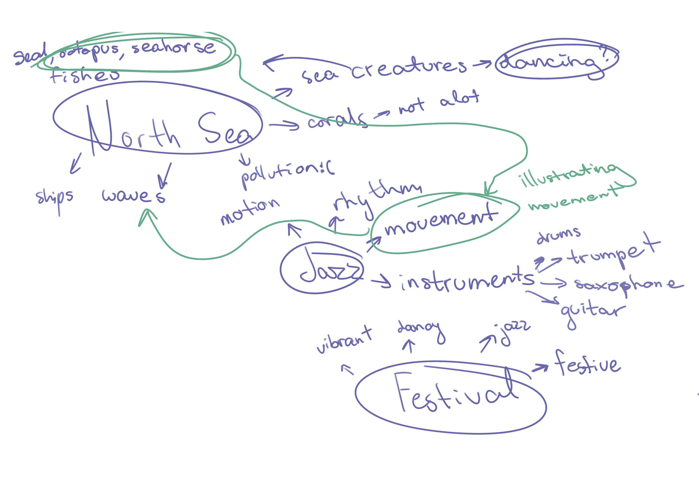
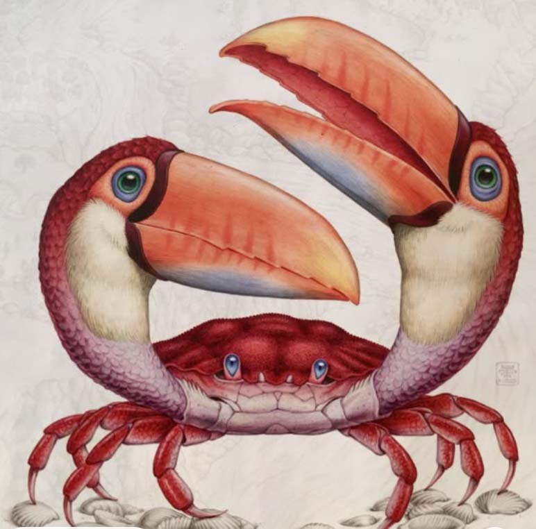
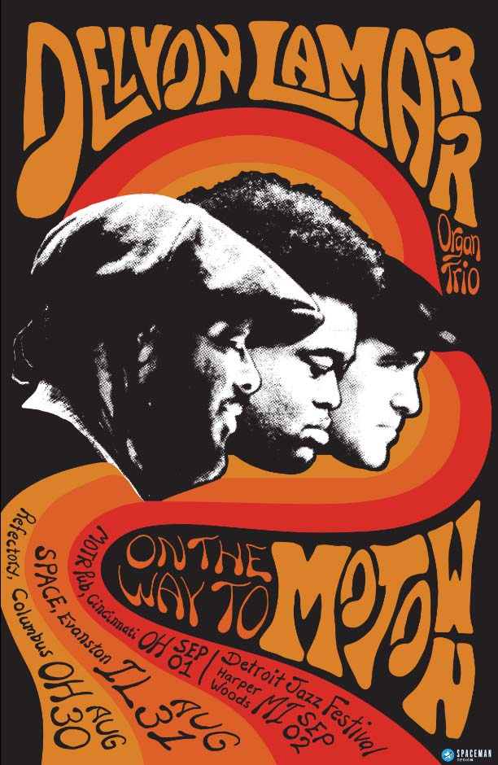
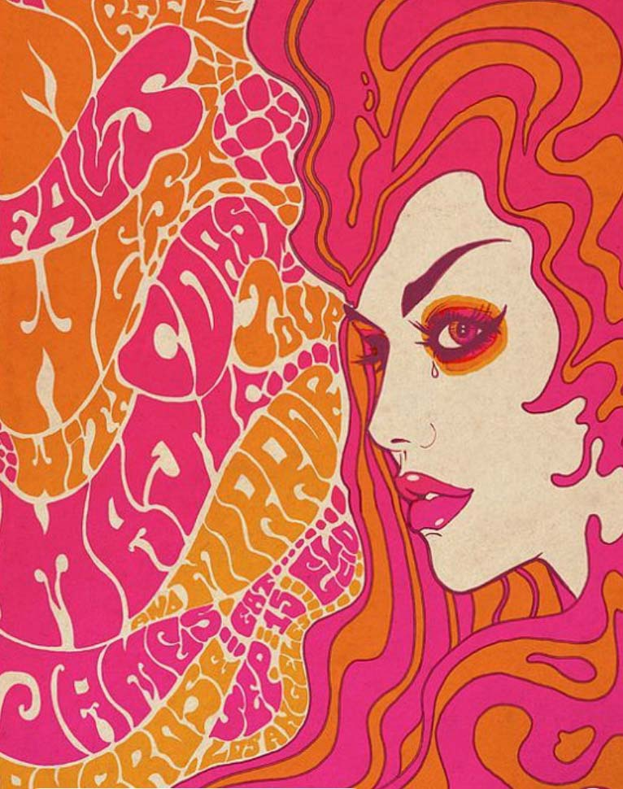
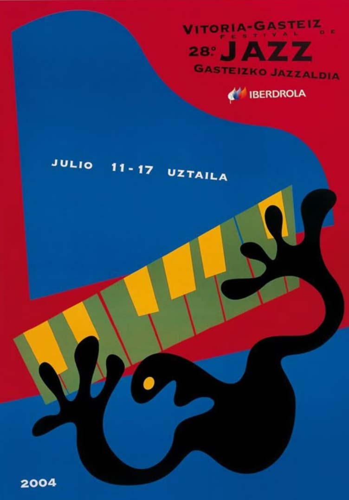
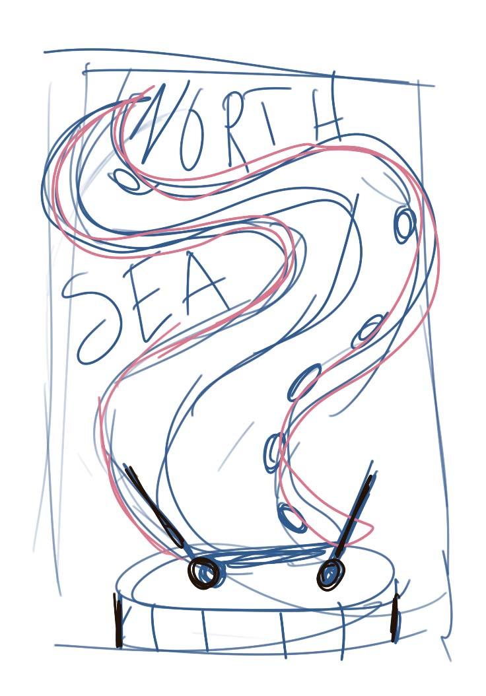
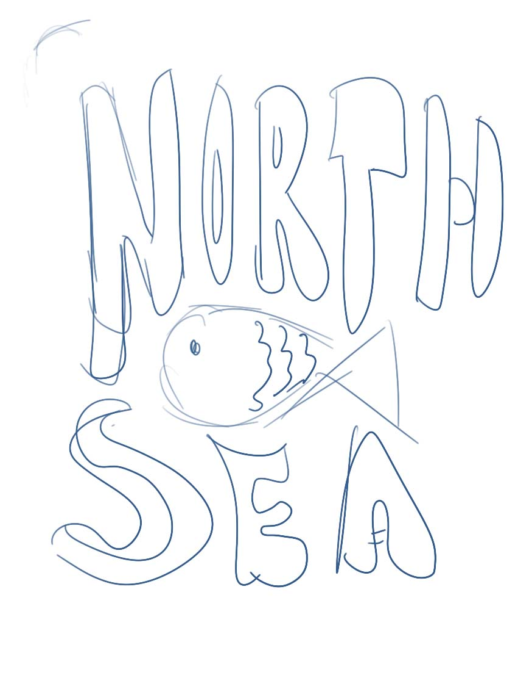
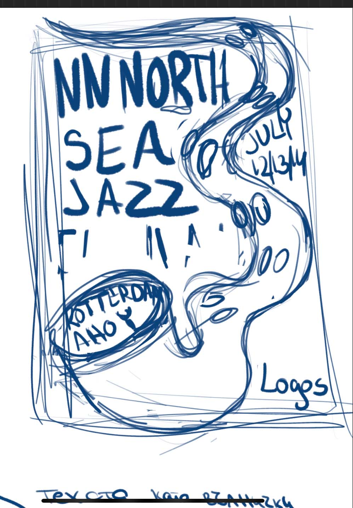
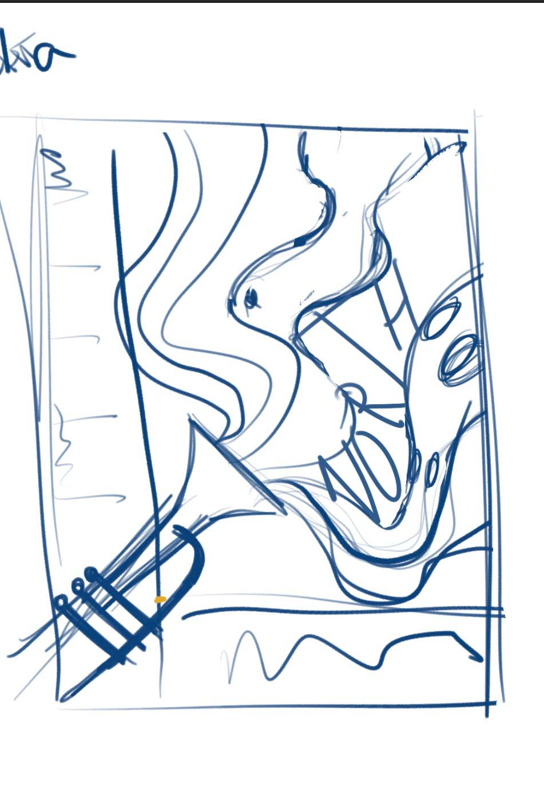

"Nnorth Sea Jazz"
“North Sea Jazz Festival” ,university project , challenged students to create a poster and t-shirt for the festival within the spam of just a week. My goal was to capture the festival's vibe and the essence of jazz in my design. Having some prior experience with jazz posters gave me a bit of an advantage. I wanted to not only illustrate the concept of the festival but also further expand my skills in typography.
Research
The majority of my research was focused on my goal of incorporating typography wrapped around the image. This included observing a lot from the works of artists like Bonnie Maclean and books like “Worlds Best Typography”. Another important part of my research involved looking into the festival itself and the North Sea, as I wanted to include symbols from there as well.
Brainstorming

Inspiration




Sketches
My initial idea was simply to incorporate some of the elements from the brainstorming session into the design. After giving it some thought, I realized that a playful approach would be to morph an octopus—specifically its tentacle, since it's found in the North Sea. By incorporating it I wanted to create a sense of free movement that relates to the genre. To further illustrate the concept of jazz, I took the shape of a saxophone to morph it with. While further observing some of Bonnie Maclean's illustrations, I also recognized the importance of color and how crucial it is for the text to stand out with the chosen color palette.




Colors
For the color palette, I wanted to maintain a realistic vibe, so I chose blue for the background to represent water. As for the saxophone/tail, I went with vibrant yellow and pink—since people often associate an octopus with pink and a saxophone with yellow. This helped the design feel more natural while still being visually striking.
Result
Through this quick process, I learned how important it is to work fast while staying organized. Although the poster turned out well, next time I would manage my time and workflow better. I didn’t have enough time to focus on the details, and I would invest more effort into areas where I know I’m not as proficient. In this case, I would focus more on better incorporating the text around the image.
Overall, this experience taught me valuable lessons about time management and refining my design skills, leaving me excited to apply what I’ve learned to future projects!